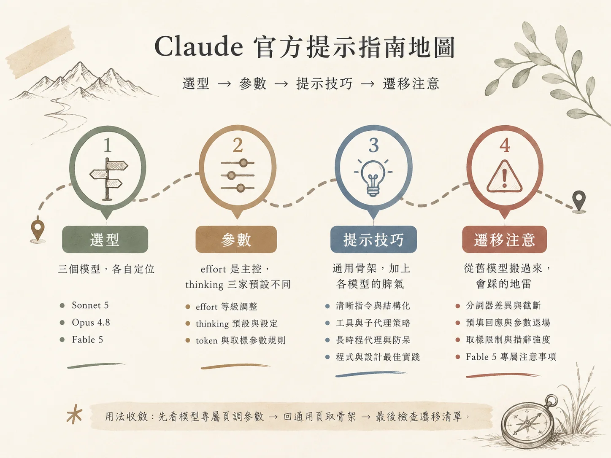

Anthropic publishes four prompt engineering guides in its official documentation: three covering a single model each (Sonnet 5, Opus 4.8, Fable 5), and one covering the general techniques shared across all models. Each stands as its own document, and using them in practice means jumping back and forth between pages. This entry pulls them into one working map, ordered by the decisions actually made when a new task arrives: pick the model, set the parameters, apply the prompting techniques, then check what breaks when carrying a prompt over from an older model.

How this was assembled
Everything here comes from what the four documents actually state, and anything the documents leave out is marked as "not in the documentation." The priority order the documents set out is carried into the map in full: model-specific guides first, then general techniques, then migration considerations. Where the two conflict, the model-specific guide wins. Parameter names and code stay as they are.
# Layer One: Model Choice — Where Each of the Three Stands
Model choice answers one question: how long an autonomous run does this task need? The positioning the documents give the three models lines up neatly, from a single-shot task through to autonomous execution across weeks.
| Model | Strengths as stated in the docs | Where it fits |
|---|---|---|
| Sonnet 5 | Coding and agentic tasks | Existing Sonnet 4.6 prompts work out of the box; tool chains, structured extraction |
| Opus 4.8 | Long-horizon agentic work, knowledge work, vision, memory tasks | Interactive coding that has to hold coherence over a long horizon |
| Fable 5 | End-to-end work that would take a human hours to weeks (same underlying model as Mythos 5) | The hardest unsolved problems; multi-day goal-directed autonomous execution |
Fable 5 carries an explicit limit on its design scope: the documentation states it does not apply to offensive cybersecurity, biology or life sciences work. Requests of that kind may come straight back as stop_reason: "refusal". For either of those two categories, pick a different model from the start.
# Layer Two: Parameters — effort Is the Main Control, thinking Defaults Differ Across All Three
All three models share the same set of effort levels: max > xhigh > high > medium > low. The levels match, and the starting points differ considerably:
- Sonnet 5: defaults to
high(same as 4.6); raise the hardest coding and agentic tasks toxhigh. - Opus 4.8: start coding and agentic tasks at
xhigh; intelligence-sensitive tasks athighor above.maxmay see diminishing returns as tokens grow, and it overthinks readily. - Fable 5: most tasks on the
highdefault, the most sensitive onxhigh, routine work down tomediumorlow. The documentation states outright that its low effort usually already exceeds the xhigh performance of earlier models.
Only the Sonnet 5 documentation gives a cross-model comparison: medium on Sonnet 5 sits around high on 4.6, and high on Sonnet 5 sits around max on 4.6. When comparing, going by observed thinking length works more reliably than going by the name.
All three models share one behaviour at low and medium: they hold the work strictly inside what was asked for. A task of moderate complexity on low carries a risk of underthinking; the documentation lists "raise the effort" as the correct answer, with prompting as a patch for when latency is constrained. Where staying on low is genuinely necessary, add this line:
This task requires multi-step reasoning. Think through the problem thoroughly before answering.
The default state of thinking goes its own way on each of the three, and this is the cell most easily misjudged when carrying a prompt across:
| Model | With the thinking parameter omitted | How to turn it off | Manual extended thinking |
|---|---|---|---|
| Sonnet 5 | Adaptive thinking on | thinking: {type: "disabled"} |
Using it returns 400 |
| Opus 4.8 | Thinking off; turning it on needs an explicit {type: "adaptive"} |
Off by default | Not itemised in the docs |
| Fable 5 | Adaptive only, always on, emitting summarised thinking | Not in the docs | No extended thinking budget |
Models calibrate how deeply to think from two factors: the effort parameter, plus the complexity of the query itself. The old budget_tokens is on its way out — Opus 4.6 and Sonnet 4.6 still accept it while marking it deprecated, and Opus 4.7 onwards, Fable 5 and Mythos 5 return 400 if it is set. The migration is to swap the thinking budget for adaptive plus effort:
# old form (4.7+ returns 400)
thinking={"type": "enabled", "budget_tokens": 10000}
# new form
thinking={"type": "adaptive"}
output_config={"effort": "high"} # max_tokens acts as the hard ceiling
Token ceilings and sampling parameters follow their own rules per model: Sonnet 5 ships a new tokenizer, so the same text runs about 30% more tokens, and at high effort max_tokens has to leave room for thinking and tools, with too little room producing "all thinking, truncated answer, stop_reason: "max_tokens""; sampling parameters (temperature, top_p, top_k) return 400 when set to anything other than the default. Opus 4.8 starts max_tokens at 64k on the max and xhigh tiers before adjusting; sampling restrictions are not itemised in that document. Fable 5 gives no max_tokens figure, its sampling restrictions are absent from the documentation, and a single request may run for minutes with autonomous execution running for hours, so client timeouts have to be extended to match.
# Layer Three: Prompting Techniques — A General Skeleton, Plus Each Model's Temperament
The general document states the basics plainly: think of Claude as a bright new hire who lacks context. The golden rule in one line — show your prompt to a colleague, and whatever confuses them will confuse Claude. Four fundamentals follow:
- Be clear and direct. Spell out any behaviour that goes beyond the expected; use a numbered list when the order of steps matters.
- Explain the reason. State the motivation behind an instruction, and the model generalises more precise behaviour from the explanation.
- Give examples. Three to five works best; they should be relevant, varied (covering edge cases), and wrapped in
<example>tags. - Structure with XML. When instructions, background, examples and input sit mixed together, separate them with
<instructions>,<context>and<input>.
Long context (20k tokens and above) has three practices with measurements behind them: put long documents at the top of the prompt and the query and instructions at the end, which can raise response quality by up to 30% on multi-document input; wrap each document in <document> tags; ask the model to quote the relevant passages first and perform the task afterwards, which clears the interference from everything else.
Output format control has three moves, all pointing the same way: use positive instructions (for prose, say "write in flowing prose paragraphs"), use XML format indicators, and make the prompt's own style resemble the output you want (strip markdown out of the prompt and less markdown comes back). The newest models are more direct, pragmatic and sparing with words, and may skip the verbal summary after a tool call; ask for the summary explicitly if it is wanted. Maths defaults to LaTeX, so plain text needs stating too.
Tools and subagents: the three models have completely different temperaments, and this section is worth committing to memory whole:
- Sonnet 5 uses tools more aggressively than 4.6 and carries a self-verification loop. With thinking disabled its tool use drops in frequency, so turning thinking off while still depending on tools requires an explicit instruction in the system prompt.
- Opus 4.8 tends to reason first and reach for tools second, and raising the effort is the effective way to increase tool use; it leans towards fewer subagents by default, so when to delegate needs spelling out.
- Fable 5 dispatches parallel subagents more aggressively than earlier models, and the documentation recommends designing for asynchronous communication so the main flow does not block waiting.
Do not spawn subagents for work you can complete directly within a single response. When several items need handling separately, or several files need reading at once, spawn multiple subagents in the same turn.
One change here is worth recording: within the same model family, one version apart, the default inclination on "should subtasks (subagents) be spawned automatically" flips entirely. The previous generation, Opus 4.6, preferred spawning subtasks aggressively, even where a simple query would have sufficed, and the official documentation asks you to state when they should be used; by Opus 4.8 the default turned conservative, requiring active guidance before it delegates; and Fable 5 after it swings back to the aggressive end. Carrying the same prompt across versions makes the behaviour drift — 4.6 leans many, 4.8 leans few, Fable 5 leans many again.
Steering the thinking also has ready-made phrasings. Where a large system prompt triggers thinking too often, Sonnet 5 and Opus 4.8 share this passage: "Thinking adds latency, so use it only where it meaningfully improves answer quality, usually on problems that require multi-step reasoning. When in doubt, answer directly." Where Opus 4.6 at high effort explores too much up front, telling it to commit works: "When deciding how to solve a problem, pick one approach and stay with it." Two smaller points: general instructions ("think thoroughly") often beat a hand-written step-by-step plan; and Opus 4.5 with thinking disabled is sensitive to the word "think," so use consider, evaluate, reason through instead.
On long-horizon agents the general document supplies a whole framework. Sonnet 5, 4.6, 4.5 and Haiku 4.5 are context-aware and can track remaining tokens; inside a framework that auto-compacts context, state it explicitly — "your context window will be compacted automatically, you can keep working, and remaining tokens are not a reason to stop" — so the model does not wrap up early. State management divides up as: JSON for structured data, text for progress notes, git for state tracking — the documentation says the newest models perform particularly well at using git to track state across work sessions. On the safety side, the documentation lists three classes of action worth confirming first: destructive (deleting files, clearing tables), hard to reverse (force push, resetting history), and visible to others (pushing, commenting, sending messages).
For coding there are four directly reusable guard passages:
Passage 1Clear away every temporary file or script created along the way when the work finishes.
Passage 2Avoid over-engineering: hold the scope to what was asked; add documentation, defensive code and abstraction layers only when asked or when clearly necessary.
Passage 3Write a high-quality, general solution. Never hard-code values for a specific test; the solution must be correct for all valid inputs, and passing the tests follows from that naturally.
Passage 4Investigate before answering: always read a file before discussing it; when the user mentions a specific file, open it first, and never describe code from guesswork.
Frontend design is the one section where the model holds a fixed aesthetic. Opus 4.8's defaults are fairly stubborn: a warm off-white background (around #F4F1EA), a serif display typeface, italic emphasis, terracotta and amber tones. Sonnet 5 also converges on a consistent default style (the documentation lists no specific colours), and the general document separately names the model's fondness for converging on the Space Grotesk typeface. Fable 5's guide has no section on design defaults. Two ways out: supply concrete specifications (explicit hex values and typeface names), or have the model propose four design directions before implementing. Generic adjectives ("clean and minimal" and the like) only make it jump to another fixed palette, which amounts to saying nothing.
# Layer Four: Migration Traps — Where Carrying Prompts Over Commonly Fails
This layer is entirely items that used to work and either error out or degrade once carried across. One by one:
| Item | Symptom | What to do |
|---|---|---|
| Sonnet 5's new tokenizer | Same text runs about 30% more tokens, and the old max_tokens causes truncation | Re-estimate max_tokens, leaving room for thinking and tools at high effort |
| Response prefill removed | From the 4.6 generation and Mythos Preview onwards, prefilling the final assistant turn returns 400 | Whatever prefill handled — format control, removing preambles, continuation — moves to format instructions; assistant messages elsewhere in the conversation stay as they were |
| budget_tokens retired | Opus 4.7+, Fable 5 and Mythos 5 return 400 if it is set | Switch to {type:"adaptive"} plus effort, with max_tokens as the hard ceiling |
| Sampling parameters locked | Sonnet 5 returns 400 on non-default temperature / top_p / top_k | Remove the sampling parameters; the documentation notes this restriction is new at the Sonnet tier |
| Wording intensity | From Opus 4.5 / 4.6 onwards the models are more sensitive to system prompts, and "CRITICAL: You MUST" over-triggers | Drop back to ordinary descriptive sentences ("use this tool in this situation") |
| effort comparison | The same level name produces about one tier's difference in actual thinking between old and new models | Compare by observed thinking length rather than by name |
Fable 5 carries four further adjustments of its own, the first two tied directly to safety classifiers. It runs classifiers over three categories of content: offensive cybersecurity, biology and life sciences, and extraction of summarised thinking; benign work can trigger them by mistake. The documentation recommends setting a fallback to Opus 4.8 server-side or client-side, so refused requests redirect automatically. The second point is to avoid asking the model to reproduce its reasoning — requesting an echo or transcript of internal reasoning may trigger the reasoning_extraction refusal category; where reasoning visibility is needed, read the structured thinking blocks instead.
The last two address long autonomous runs. Against fabricated progress: "Before reporting progress, check every claim against tool results from this work session. Report only work you can point to evidence for; where something has not been verified, say so plainly." Against stopping early: "You are operating autonomously, and the user is not watching in real time. For actions that match the original request and are reversible, go ahead without asking again. Before ending the turn, check your final passage: if it is a plan, an analysis, a question, or a promise about work not yet done, complete it now with a tool call."
# Links
- ● Claude prompting best practices (general)
- ● Sonnet 5 prompting guide
- ● Opus 4.8 prompting guide
- ● Fable 5 prompting guide
Source: platform.claude.com official documentation ・ Scope: Sonnet 5 ・ Opus 4.8 ・ Fable 5 ・ general best practices